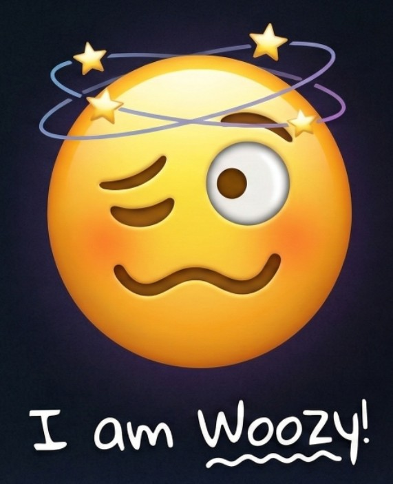

The Lobotomy Tone HAT
Part of Trollino AU EDU LAB
A "Woozy Tone" LoRA - a deliberate "soft lobotomy" that forces an LLM into a state of dizziness and wavy-mouthed confusion.
Black Tone HAT to tricky companion to 21 colorful Tone HATs